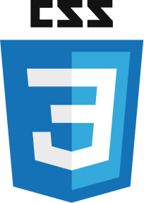
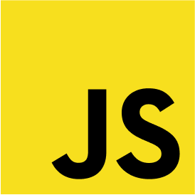
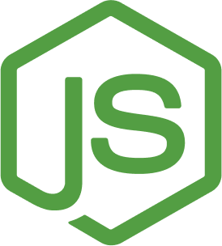
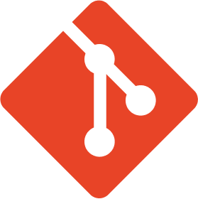
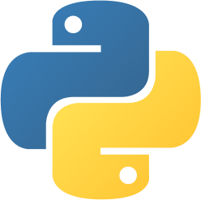
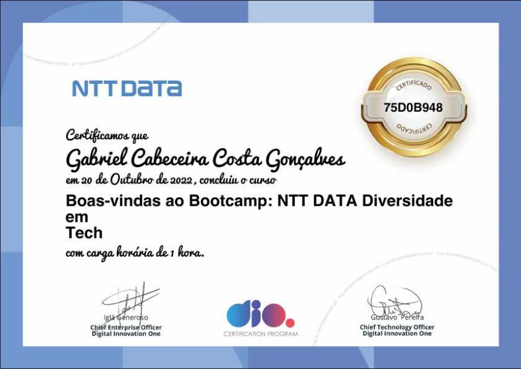

Olá,
sou o Gabriel Cabeceira
Analista de Sistemas Jr. - ASC Brazil
Uberlândia - MG
(34) 9 9220-1095
gabrielcabeceira@gmail.com
Habilidades
Hard Skills

- 
- 
- 
- 
- 
Soft Skills
- Facilidade com tarefas práticas
- Organização
- Trabalho em equipe
- Comprometimento com resultados
- Gosto por aprender
- Comunicação
Portfólio
-
Portfólio v1.0
Pages https://gabriel-cabeceira.github.io/meu-portfolio/ Repositório https://github.com/Gabriel-Cabeceira/meu-portfolio -
Pokedex
Pages https://gabriel-cabeceira.github.io/pokedex/ Repositório https://github.com/Gabriel-Cabeceira/pokedex -
Trilha CSS DIO
Pages https://gabriel-cabeceira.github.io/trilha-css-desafio-01-landing-page/ Repositório https://github.com/Gabriel-Cabeceira/trilha-css-desafio-01-landing-page
Certificados
- 
Formação
-
Análise e Desenvolvimento de sistemas
3° PeríodoUniversidade Anhanguera - Uberlândia MG
-
Técnico em Edificações
CompletoSENAI - Uberlândia MG
Idiomas
- Português
- Inglês (Intermediário)
Experiência Profissional
-
Analista de Suporte Jr. / ASC Brazil
Jun 2023 - AtualmenteAtualmente, atuo nas aplicações, avaliando logs em servidores e consultas em bancos de dados, analisando casos complexos e identificando detalhes para auxiliar na solução dos incidentes, análise e desenvolvimento de flows para atendimentos automáticos. Também estou responsável pela resolução de tratativas de Ordens de Serviço através do ERP. No Service Desk N1, realizo atendimentos por meio de reuniões, ligações e conferências, abordando de forma adequada as tratativas necessárias.
-
Control Desk / Algar Tech
Out 2022 - Maio 2023Experiência sólida em acompanhamento de indicadores e produtividade, com geração de relatórios para supervisão, coordenação, gerência e clientes. Contribuí para o controle e aumento da produtividade e faturamento da operação, além de minimizar perdas em momentos críticos. Busquei oportunidades para aplicar minha expertise em análise de indicadores e coordenação de operações, visando alcançar metas e agregar valor em novos projetos.
-
Suporte Técnico e Comercial / TJ Automação
Nov 2021 - Set 2022Experiência abrangente em atendimento ao cliente e vendas, tanto presencialmente como por telefone e canais digitais. Dedicação em esclarecer dúvidas dos clientes e oferecer treinamento a novos colaboradores. Habilidade em elaborar planilhas, orçamentos e fornecer suporte na infraestrutura de TI, incluindo manutenção e configuração de computadores.
-
Atendente de Relacionamento / Callink
Set 2020 - Nov 2021Exerci atendimento ao cliente por canais de voz e canais digitais, atendendo às demandas do projeto da Claro (Claro Flex, Claro móvel, NET residencial). Solucionei problemas relacionados à parte financeira, fraudes e problemas técnicos. Por meio do trabalho executado, auxiliei os clientes nos mais diversos casos para que pudessem ter o serviço devidamente como contratado. Além disso, contribuí para alcançar melhores resultados nos indicadores da equipe.